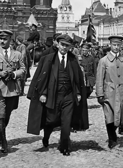
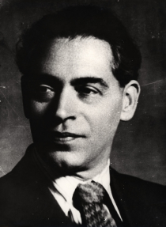
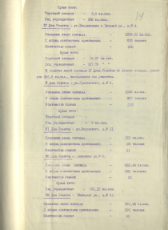
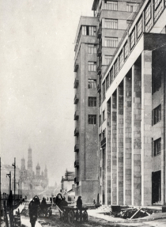

1917
В октябре 1917 года в результате государственного переворота происходит переход власти. Главной правящей партией в стране становится партия большевиков.
В 1918 году Совет народных комиссаров принимает решение о переезде правительства страны во главе с Владимиром Лениным из Петрограда в новую столицу — Москву. Количество служащих в городе увеличивается почти в 2 раза — до 281 тысячи человек, что приводит к серьезному дефициту жилья.
Поначалу проблему нехватки жилищных площадей решают расселением сотрудников высших органов государственной власти в 19-ти домах Советов, расположенных в гостиницах «Националь», «Метрополь» и «Петергоф», а также в бывших дворянских особняках и других подходящих постройках.
В 1926 году было принято решение о строительстве специального жилья.
1927
20 января 1927 года состоялось первое заседание комиссии, образованной по предложению председателя Совнаркома СССР А.И. Рыкова, по вопросу о постройке дома ЦИК и СНК СССР. В состав комиссии вошли: А.С. Енукидзе, И.И. Мирошников, Г.Г. Ягода и архитектор Б.М. Иофан.
Первоначально комиссией обсуждался вопрос о постройке 7-этажного дома на 200 квартир в районе между Никитскими воротами и Кудринской площадью, либо на пересечении улиц Воздвиженка и Моховая. Однако 24 июня 1927 года комиссия приняла окончательное решение: местом постройки «дома для ответственных работников ЦИК и СНК Союза ССР, ВЦИК и СНК РСФСР» определили участок на правом берегу Москвы-реки, на «Болоте».
Первоначальная смета строительства составляла 6,5 млн руб. Главным архитектором был назначен Борис Михайлович Иофан.
 1928
В 1928 году на месте бывшего Винно-Соляного двора на пересечении Всехсвятской улицы и Берсеневской набережной начались работы по разбору складских построек.
Главным архитектором Б.М. Иофаном был спроектирован не просто жилой дом, а уникальный автономный комплекс в стиле позднего конструктивизма, включавший 505 квартир, клуб, кинотеатр, библиотеку, амбулаторию, детский сад и ясли, столовую, парикмахерскую, продовольственный и промтоварный магазины, сберкассу, спортивный зал с теннисным кортом, механическую прачечную и мусоросжигательную печь.
При строительстве использовались новаторские архитектурные и инженерные решения: например, театральный зал клуба имени А. Рыкова имел самое большое на тот момент купольное перекрытие в стране — его диаметр составлял 32 метра при толщине всего 9 сантиметров. В общей сложности на стройплощадке было занято около 2 500 рабочих.
Из-за необходимости закупки дорогих материалов и техники заграницей стоимость строительства выросла в несколько раз и превысила 30 млн руб.
